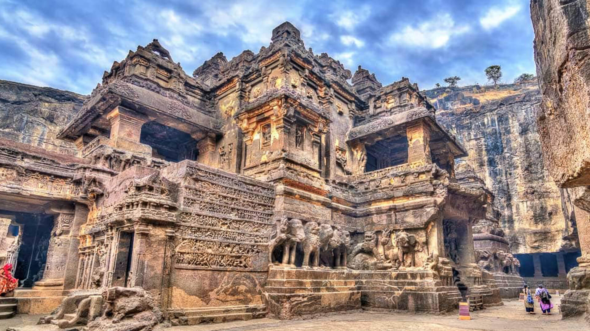

Maharashtra, a state in western India, has a rich and varied history shaped by its geography, culture, and political dynamics.
Ancient Period
Evidence of human habitation in Maharashtra dates back to the prehistoric era, with rock
paintings and tools found in sites like Bhimbetka and caves in Ajanta and Ellora.

By the 3rd century BCE, Maharashtra was part of the Mauryan Empire, which helped spread Buddhism in the region. The rock-cut caves of Ajanta and Ellora were significant centers of Buddhist art and architecture.
Medieval Period
The medieval period in Himachal Pradesh, roughly spanning from the 8th to the 16th centuries, was marked by the rise of local kingdoms, cultural developments, and significant interactions with neighboring regions.
Rise of Rajput Kingdoms:
After the decline of the Mauryas, various regional powers emerged, including the Satavahanas, who played
a crucial role in trade and culture from the 1st century BCE to the 3rd century CE.
Chalukyas and Rashtrakutas:
The region was later ruled by the Chalukyas and the Rashtrakutas, known for their patronage of the arts and temples, including the famous Kailasa temple in Ellora.
Maratha Empire
Rise of the Marathas:
The late 17th century saw the rise of the Maratha Empire under Chhatrapati Shivaji Maharaj, who established a strong regional
power and is celebrated for his military tactics and administration.
Expansion and Administration:
The Marathas expanded their territory significantly, creating a vast empire that influenced much of India.
They established a system of governance and promoted Marathi culture and language.